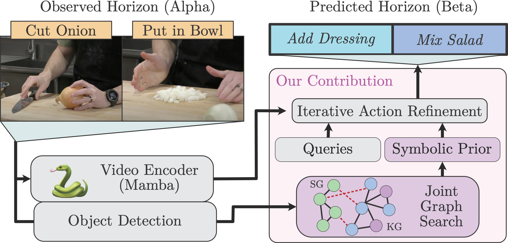
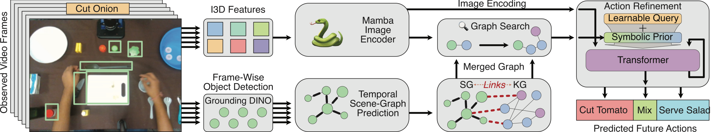
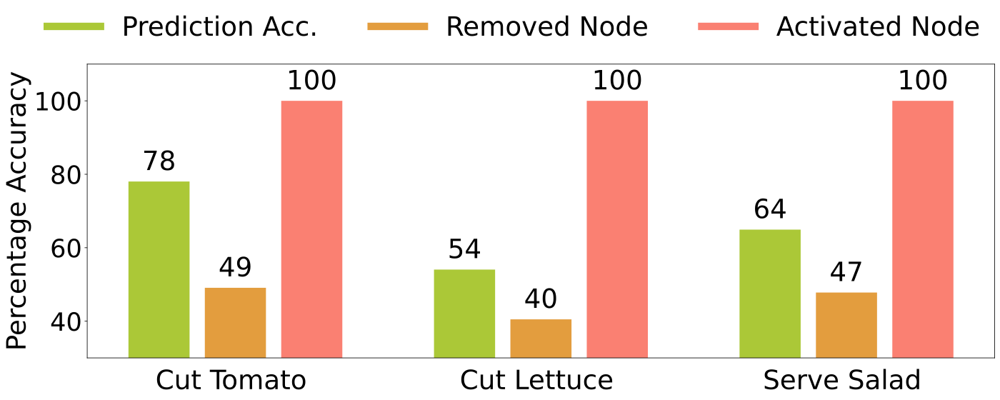
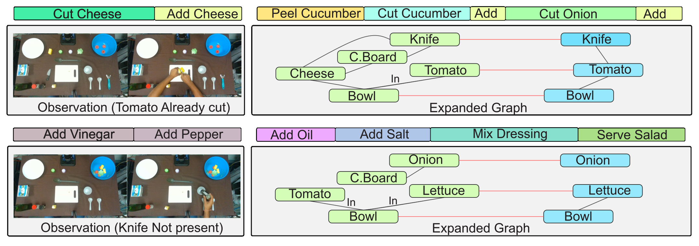
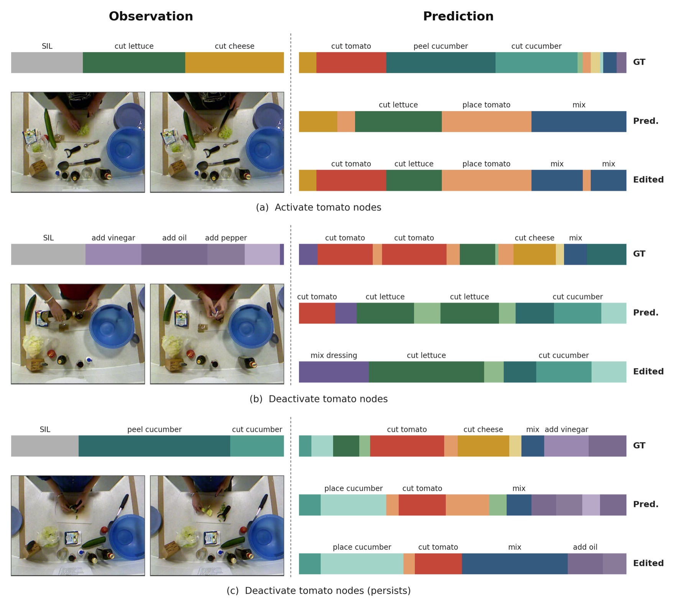

As robots and intelligent systems increasingly interact with humans, they must anticipate long sequences of future actions from only brief observations. While purely neural models typically require extensive observations to predict future actions and remain difficult to interpret and adjust, symbolic priors offer a structured alternative. To this end, we introduce SymAnt, a novel neuro-symbolic approach that unifies the expressiveness of neural networks with the structured reasoning of scene and knowledge graphs. Given a short video, SymAnt performs a joint-search over both graphs to construct a symbolic context, enabling unified reasoning over spatial relationships, object attributes, affordances, and associated actions. This symbolic context serves as a prior for an iterative refinement process that progressively generates and improves the sequence of future actions. By grounding predictions in symbolic context, SymAnt anticipates long-horizon actions from short observation windows in a parameter-efficient manner, while enabling users to directly edit the underlying knowledge to adjust predictions without further training. Through our experiments, we demonstrate the effectiveness of SymAnt, particularly when only short observation contexts are available, across five diverse datasets: Breakfast, 50 Salads, EPIC-KITCHENS, EGTEA Gaze+, and Assembly101.

With short observations (α = 5–10% of the video), SymAnt is best in every setting on Breakfast and 50 Salads, by 3.2% MoC on average over the strongest baseline (NeSCA) and 5–10% over LLM baselines. The table shows the longest horizon (β = 0.5, predicting the next half of the video).
| Method (MoC, β = 0.5) | Breakfast α=0.05 | Breakfast α=0.1 | 50 Salads α=0.05 | 50 Salads α=0.1 |
|---|---|---|---|---|
| FUTR | 5.58 | 11.71 | 8.63 | 11.36 |
| GPT-o1 | 5.15 | – | 11.18 | 12.29 |
| NeSCA | 5.88 | 11.94 | 9.38 | 13.96 |
| SymAnt (ours) | 8.15 | 12.92 | 14.33 | 18.83 |
On egocentric EPIC-KITCHENS, SymAnt outperforms the LLM-based AntGPT and PALM and approaches the much larger ICVL and INSIGHT, with 3M trainable parameters.
| EPIC-KITCHENS (mAP) | Params | All | Freq. | Rare |
|---|---|---|---|---|
| DiffAnt | 80M | 38.1 | 55.0 | 31.0 |
| AntGPT | 7.5B | 40.1 | 58.8 | 31.9 |
| PALM | 7.5B | 40.4 | 59.3 | 30.3 |
| SymAnt (ours) | 3M | 42.5 | 59.3 | 32.3 |
| ICVL | 17.5B | 43.3 | 61.6 | 33.8 |
| INSIGHT | 8.5B | 45.2 | 62.4 | 36.0 |
Parameter counts are trainable parameters; SymAnt's count excludes the frozen object detector, ViT node encoder, and I3D backbone. Full results, including EGTEA Gaze+ and Assembly101, are in the paper.
Because predictions are anchored in an explicit graph, activating or deactivating graph nodes at inference steers the anticipated actions without retraining.



@inproceedings{aryan2027symant,
title = {SymAnt: Grounding Long-Horizon Action Anticipation with Adaptable Symbolic Priors},
author = {Aryan, Fnu and Xie, Yaqi and Campbell, Joseph and Kim, Woojun and Lee, Kwonjoon and
Nourkhiz Mahjoub, Hossein and Moradi-Pari, Ehsan and Sycara, Katia and Stepputtis, Simon},
booktitle = {Proceedings of the IEEE/CVF Winter Conference on Applications of Computer Vision (WACV)},
year = {2027}
}